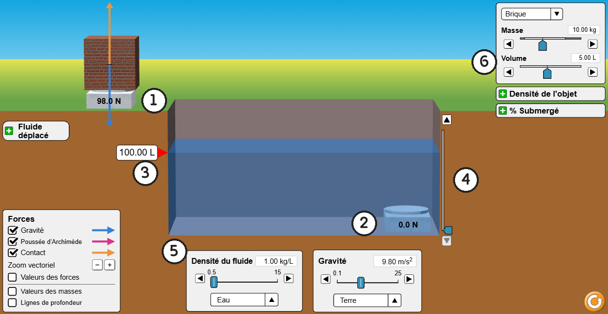
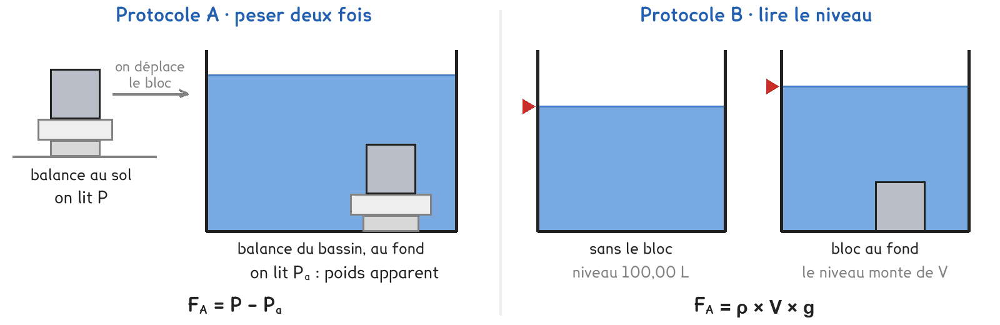

1re ou Tle Bac Pro · MMCM · MVTR · CTRM · TP sur simulation SIM-01
De quoi dépend la force avec laquelle l'eau porte un objet, et la mer porte-t-elle davantage que l'eau douce ?
2 figures
Sujet. Dans la piscine, on porte un camarade dans ses bras sans effort ; hors de l’eau, beaucoup moins. Et à la mer, on flotte encore plus facilement qu’à la piscine.
Problématique : de quoi dépend la force avec laquelle l’eau porte un objet, et la mer porte-t-elle davantage que l’eau douce ?
La simulation. « Poussée d’Archimède », écran « Lab », sur phet.colorado.edu. On y pèse un bloc, puis on le plonge dans un bassin. Sans réseau : la copie hors ligne, fichier phet/buoyancy_fr.html.

Capture de la simulation « Poussée d’Archimède », PhET Interactive Simulations, University of Colorado Boulder, CC BY-NC 4.0.
a) Écrire dans chaque case le numéro de la figure qui correspond.
| la balance au sol : ……… | la balance du bassin : ……… | le niveau du bassin : ……… |
|---|---|---|
| la hauteur de la balance du bassin : ……… | la masse volumique du fluide : ……… | le volume du bloc : ……… |
La simulation écrit les nombres avec un point : « 1.00 kg/L » se lit 1,00 kg/L. Elle appelle « densité » ce que le programme nomme la masse volumique, notée ρ. On prend g = 9,8 N/kg, que la simulation écrit en m/s².
b) Convertir, puis calculer le poids de la brique de la figure. Le premier est fait.
| 1 L = 0,001 m³ | 4,00 L = ……… m³ | 1,00 kg/L = ……… kg/m³ |
|---|---|---|
| 1,03 kg/L = ……… kg/m³ | 8,00 L = ……… m³ | brique de 10,00 kg : P = ……… N |
Deux protocoles répondent à la même question. Une partie de la classe prend A, l’autre prend B, et on compare à la fin.

Protocole A · peser deux fois. Sur la balance au sol, on lit le poids P du bloc. Posé au fond du bassin, sur la balance du bassin, il pèse moins : on lit son poids apparent Pa. L’eau le pousse vers le haut de la différence : FA = P − Pa.
Protocole B · lire le niveau. Le bloc plongé chasse de l’eau : le niveau du bassin monte d’un volume V, le volume de fluide déplacé. La poussée vaut le poids de ce fluide : FA = ρ × V × g.
c) Compléter le tableau pour comparer les deux protocoles.
| Protocole A | Protocole B | |
|---|---|---|
| Ce qu’on relève sur l’écran | …………………………… | …………………………… |
| Il faut connaître la masse volumique du fluide | oui · non | oui · non |
| Il marche avec un objet qui flotte | oui · non | oui · non |
Le choix se fait maintenant, avant de toucher à la simulation.
d) Quel protocole prenez-vous ? Justifier en une phrase. Le professeur peut vous imposer l’un des deux pour équilibrer la classe.
Je prends le protocole ……… parce que ……………………………………………………………………
e) Avant de mesurer, faire deux hypothèses. Entourer.
| Si le volume du bloc double, la poussée | double · ne change pas · diminue |
|---|---|
| Dans l’eau de mer, la poussée sur le même bloc | est plus grande · est la même · est plus petite |
Avant de commencer. Ouvrir l’écran « Lab ». Choisir le matériau « Aluminium ». Décocher « Valeurs des forces ». Replier « Fluide déplacé » avec son bouton −. Descendre la balance du bassin tout en bas, avec le curseur à droite du bassin. Le fluide est « Eau ».
f) Relever les mesures de votre protocole, puis calculer les poussées.
| Volume du bloc (L) | 2,00 | 4,00 | 6,00 | 8,00 |
|---|---|---|---|---|
| A · poids P, balance au sol (N) | ||||
| A · poids apparent Pa, eau (N) | ||||
| A · poids apparent Pa, eau de mer (N) | ||||
| B · niveau, bloc au fond (L) |
Puis, quel que soit le protocole, les poussées en newtons :
| Volume du bloc (L) | 2,00 | 4,00 | 6,00 | 8,00 |
|---|---|---|---|---|
| Poussée dans l’eau, FA (N) | ||||
| Poussée dans l’eau de mer, FA (N) |
Un calcul détaillé, 4,00 L dans l’eau : ………………………………………………………………………
g) Représenter les forces qui s’exercent sur le bloc posé sur la balance du bassin : le poids P, la poussée FA et la force exercée par la balance. Sans échelle.
Le schéma se dessine sur la feuille du TP.
h) Dans l’eau, calculer FA ÷ V pour chaque volume. La poussée est-elle proportionnelle au volume immergé ? Entourer.
FA ÷ V = ……………… · ……………… · ……………… · ……………… N/L oui · non
i) Vos hypothèses de la question e sont-elles confirmées ? Un groupe qui a pris l’autre protocole trouve-t-il les mêmes poussées ?
j) Bloc de 4,00 L au fond, dans l’eau : ouvrir « Fluide déplacé » et cocher « Valeurs des forces ». Comparer le poids du fluide déplacé, la poussée affichée et votre FA.
k) Au laboratoire, on suspendrait un cylindre à un dynamomètre au-dessus d’un bécher. Citer deux difficultés de ce vrai montage que la simulation ne montre pas.
l) Répondre à la problématique en deux phrases.
Retour à la piscine. Un camarade de 60 kg occupe un volume d’environ 60 L. Sans calculer, entourer la poussée qu’il reçoit quand il est entièrement sous l’eau.
| 6 N | 60 N | 600 N | 6 000 N |
|---|
Ce que ce TP a établi, et qui vaut pour tout objet plongé dans un liquide ou un gaz :
À RETENIR
Un objet plongé dans un fluide reçoit une force verticale, vers le haut : la poussée d’Archimède. Sa valeur est égale au poids du fluide déplacé : FA = ρ × V × g.
ρ en kg/m³, V le volume immergé en m³, g = 9,8 N/kg, FA en newtons.
Elle est proportionnelle au volume immergé et à la masse volumique du fluide : l’eau de mer, un peu plus dense, porte un peu plus que l’eau douce.
Choisir « Fluide E », dont la masse volumique est cachée. Avec le bloc d’aluminium de 4,00 L et le protocole A, mesurer FA, calculer ρ = FA ÷ (V × g), puis entourer le fluide.
alcool, 790 kg/m³ · eau, 1 000 kg/m³ · glycérine, 1 260 kg/m³ · miel, 1 440 kg/m³
Pourquoi le protocole B ne permet-il pas de répondre ? ………………………………………………………………
TP sur simulation de physique-chimie. Le travail se fait sur la feuille du TP : cette page en est la version à l'écran, sans les lignes à remplir. Rien n'est enregistré.